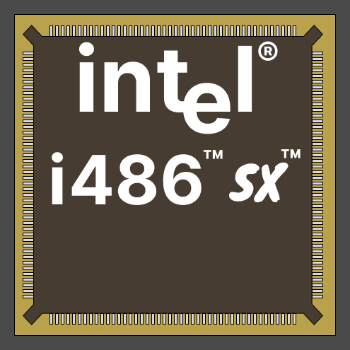
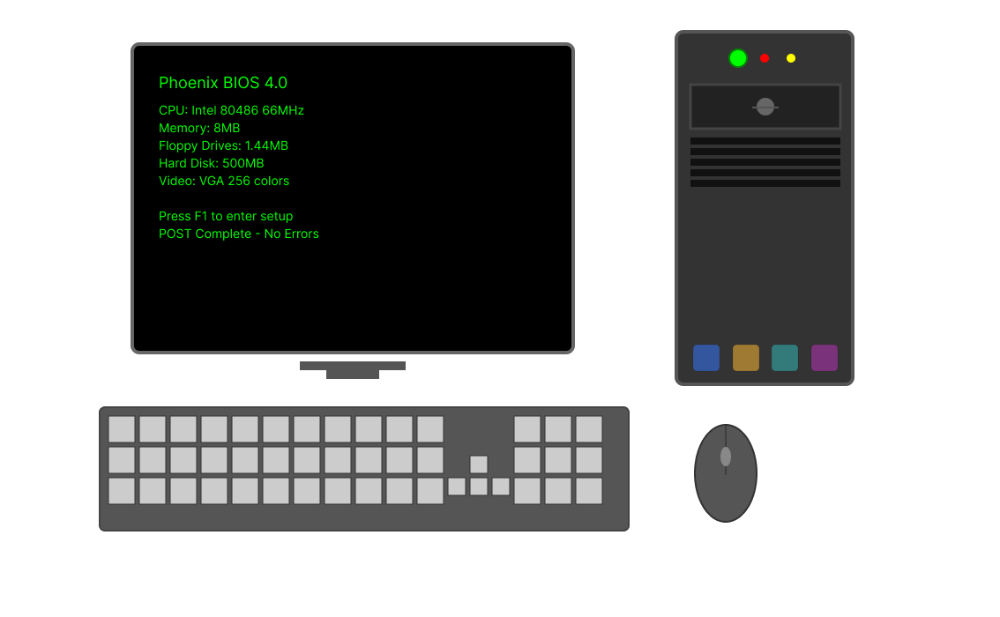

Процесор Intel
Мікропроцесори стали серцем комп’ютерів четвертого покоління. Вони об’єднували багато функцій на одному кристалі, що значно підвищило швидкодію. Це відкриває нові можливості для обробки даних та програмування.
Сучасна ЕОМ
Завдяки розвитку мікропроцесорів з’явилися доступні персональні комп’ютери. Вони змінили спосіб роботи та навчання, ставши частиною повсякденного життя. Це стало новою ерою обчислювальної техніки.